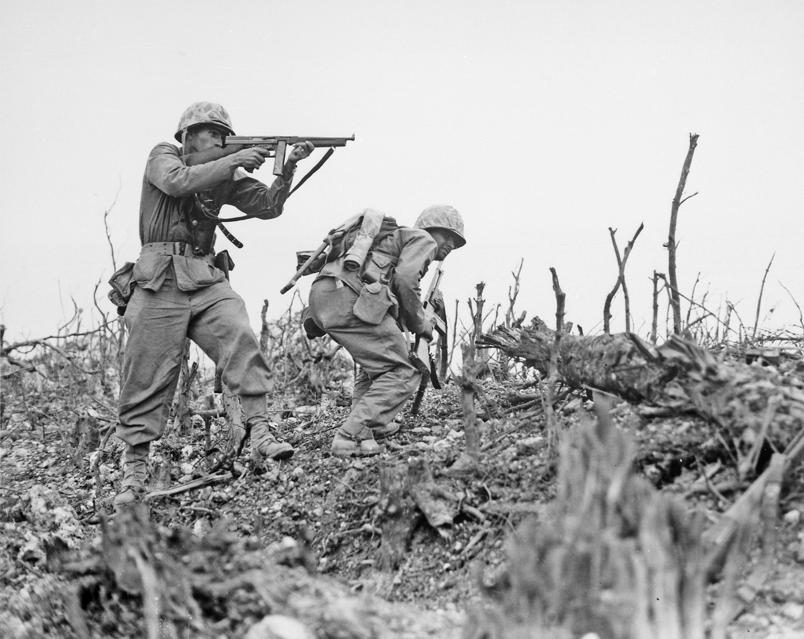

A Segunda Guerra Mundial foi um conflito militar global que durou de 1939 a 1945, envolvendo a maioria das nações do mundo — incluindo todas as grandes potências — organizadas em duas alianças militares opostas: os Aliados e o Eixo.
Geralmente considera-se o ponto inicial da guerra como sendo a invasão da Polônia pela Alemanha Nazista em 1 de setembro de 1939 e subsequentes declarações de guerra contra a Alemanha pela França e pela maioria dos países do Império Britânico e da Commonwealth. Alguns países já estavam em guerra nesta época, como Etiópia e Reino de Itália na Segunda Guerra Ítalo-Etíope e China e Japão na Segunda Guerra Sino-Japonesa.
Muitos dos que não se envolveram inicialmente acabaram aderindo ao conflito em resposta a eventos como a invasão da União Soviética pelos alemães e os ataques japoneses contra as forças dos Estados Unidos no Pacífico em Pearl Harbor e em colônias ultramarítimas britânicas, que resultou em declarações de guerra contra o Japão pelos Estados Unidos, Países Baixos e o Commonwealth Britânico.
A guerra terminou com a vitória dos Aliados em 1945, alterando significativamente o alinhamento político e a estrutura social mundial. Enquanto a Organização das Nações Unidas (ONU) era estabelecida para estimular a cooperação global e evitar futuros conflitos, a União Soviética e os Estados Unidos emergiam como superpotências rivais, preparando o terreno para uma Guerra Fria que se estenderia pelos próximos quarenta e seis anos (1945-1991).
Nesse ínterim, a aceitação do princípio de autodeterminação acelerou movimentos de descolonização na Ásia e na África, enquanto a Europa ocidental dava início a um movimento de recuperação econômica e integração política.

Alguns eventos
| Evento |
Data |
| Invasão da Polônia pela Alemanha |
1939 |
| Massacre de Babi Yar |
1941 |
| Cerco a Leningrado |
1941-1944 |
| Invasão da Normandia |
1941 |
ENVIE SUA OPINIÃO: